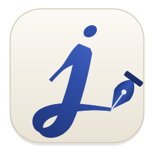
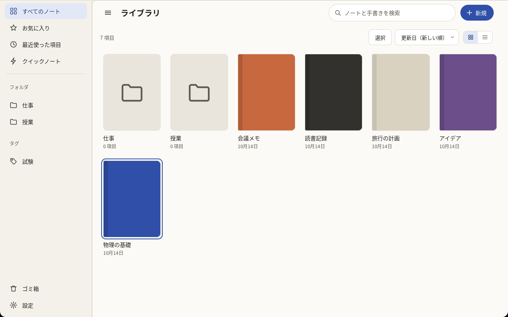
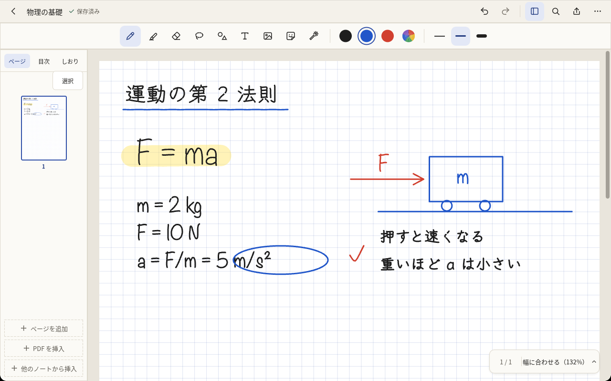
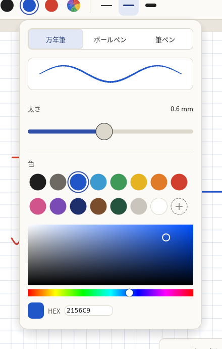
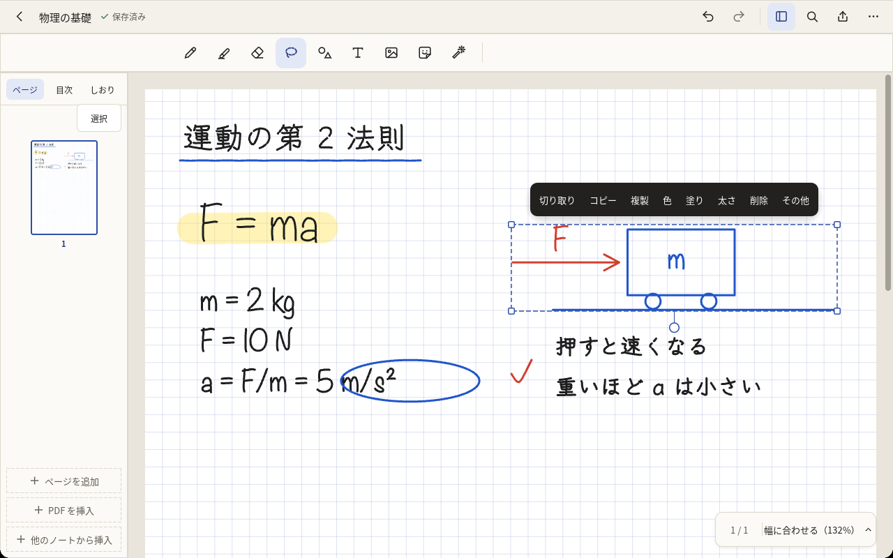
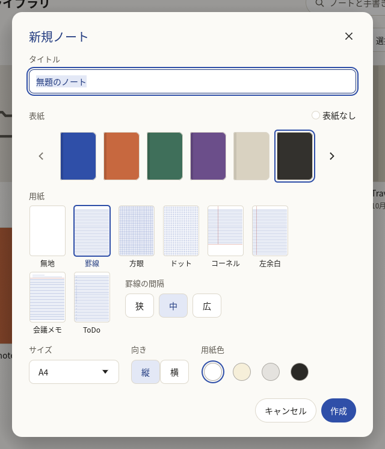
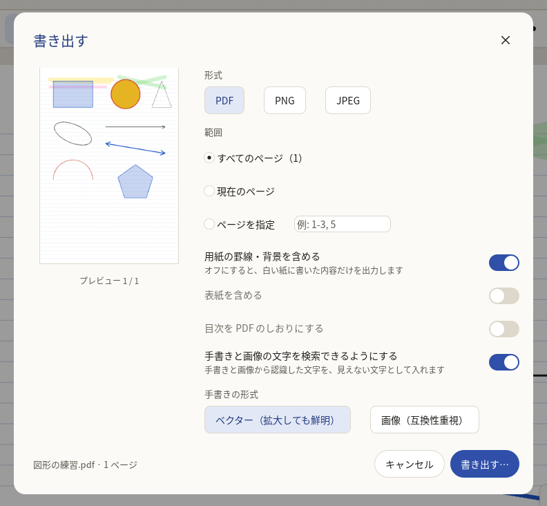
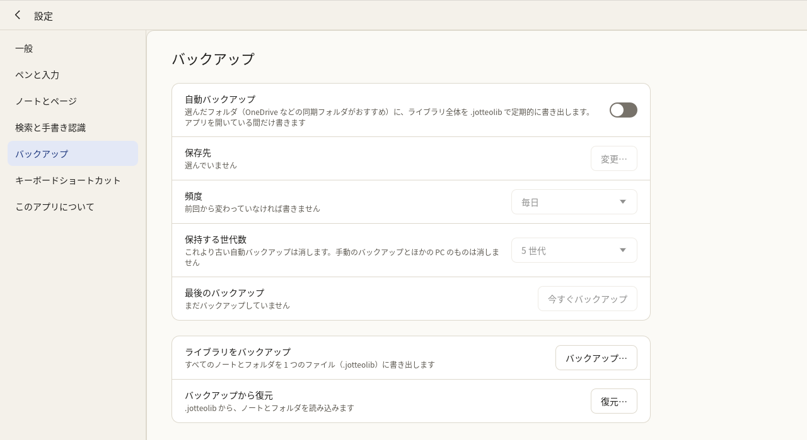

Jotteoヘルプ
Jotteo（ジョッティオ）の使い方をまとめています。アプリの中で F1 を押すと、このページを開きます。キーボードのショートカットは、Ctrl+/ を押すと一覧できます。
画面の見方
ライブラリ
起動すると最初に出る画面です。ノートとフォルダを並べます。

- サイドバー: すべてのノート・お気に入り・最近使った項目・クイックノート・フォルダ・タグ・ゴミ箱・設定。ウィンドウが狭いときは隠れ、一覧の左上の ≡ で開きます
- 検索欄（上）: ノート・フォルダの名前、テキストボックスの文字、手書きの文字、PDF の文字を探します（検索と手書きの認識）
- 新規（右上）: ノート・クイックノート・フォルダを作る、PDF・画像や .jotteo を読み込む
- 一覧の上で、並べ替え（名前・作成日・更新日・手動）と、グリッド表示・リスト表示を切り替えます
ノートの画面（エディタ）
ノートを開くと出る、書き込むための画面です。

- ヘッダー: ライブラリへ戻る、ノートの名前と保存の状態、元に戻す・やり直し、ページ一覧、ノート内検索、書き出し、その他（スクロール方向）
- ツールバー: ペン・蛍光ペン・消しゴム・投げ縄・図形・テキスト・画像・素材・レーザーポインターと、選んでいるツールの色・太さ。置く場所は上・左・右・フローティングから選べます（設定の「ペンと入力」の「ツールバーの位置」）
- ページ一覧（左）: 「ページ」「目次」「しおり」のタブ
- ステータス（右下）: 今のページ / 全ページ数と、表示倍率。ページを移った後は、左下に「戻る」「進む」のボタンが出ます
保存の操作は要りません。書いたものは自動で保存されます。
設定の「左利きモード」をオンにすると、ページ一覧を右に、ステータスを左下に置きます。
ペン・指・マウスの使い方
ペンで書き、指で動かすのが基本です。ペンを画面に近づけている間は、手のひらが触れても反応しません。
| 操作 | 動作 |
|---|---|
| ペン先 | 選んでいるツールで書く・消す・選ぶ |
| ペンの消しゴム端（後ろ側）でこする | 消しゴム（触れた部分を消す。設定で線ごと消すようにも変えられます） |
| ペンのサイドボタンを押しながら書く | 押している間だけ消しゴム（設定で投げ縄・直前のツールにも） |
| ペンのトップボタンを押す（Surface ペンなど） | クイックノートを作る |
| ペンのトップボタンをダブルクリック | 消しゴムと切り替え（設定の「ペンのダブルタップ」で直前のツールにも） |
| 指 1 本でドラッグ | スクロール |
| 指 2 本でピンチ・ドラッグ | ズーム・スクロール |
| 指 2 本でタップ | 元に戻す |
| 指 3 本でタップ | やり直し |
| 指で長押し / マウスの右クリック | メニュー（貼り付け、ページの追加など）。閲覧モードのときと「ペンのみで書く」がオンのときは、PDF の文字の上を指で長押しすると、文字を選びます |
| マウスの左ドラッグ | 選んでいるツールで書く・消す・選ぶ |
| マウスの中ボタンでドラッグ / Space を押しながらドラッグ | スクロール（手のひら） |
| マウスの戻る / 進むボタン | ページの履歴で戻る / 進む |
| ホイール / Shift+ホイール / Ctrl+ホイール | 縦スクロール / 横スクロール / ズーム |
| タッチパッドの 2 本指 / ピンチ | スクロール / ズーム |
指でも書きたいときは、設定の「ペンと入力」で「ペンのみで書く」をオフにします。オフのときは指 1 本で書き、指 2 本でスクロール・ズームします。
ペンのトップボタンは、Jotteo を使っている間、Windows のペンの設定でアプリがショートカット ボタンの動作を上書きできるようにしたときに使えます。Jotteo が動いていないときにトップボタンで起動したいときは、ペンの設定でトップボタンに Jotteo を割り当てます。ペンの設定は、Jotteo の設定の「ペンと入力」の「ペンのトップボタン」にある「ペンの設定を開く」から開けます。
ツール
ペン P
万年筆（筆圧で太さが変わる）・ボールペン（太さがほぼ一定）・筆ペン（筆圧で太さが大きく変わり、入りと抜きが出る）があります。ツールバーに色と太さを 3 つずつ並べ、押すだけで切り替えられます（1〜3、Shift+1〜3）。

色・太さを変えるときは、選んでいる色・太さをもう一度押す（ほかの色・太さはダブルクリック、指では長押し）と「ペンの設定」が開きます。ペン種・太さ（0.1〜5.0 mm）・色（パレット・HSV・HEX・最近使った色）を選ぶと、そのボタンの中身が変わります。
- 止めて図形にする: 線を書いた後、ペンを離さずに 0.5 秒止めると、直線・円・四角形などの図形に整えます。離す前にペンを動かすと、大きさや向きを変えられます。元の線に戻すときは「元に戻す」を押します（設定の「止めて図形にする」でオフにできます）
- 手ぶれ補正: 書いた線の細かな揺れをならします。強さは設定の「ペンと入力」の「手ぶれ補正」で変えます
蛍光ペン H
半透明の線で、ペンの文字の下に引かれるので文字を塗りつぶしません。色・太さはペンと同じように変えられます（太さ 1〜15 mm）。引いた後にペンを離さずに 0.5 秒止めると、まっすぐな線になります（設定の「蛍光ペンを止めて直線にする」）。
消しゴム E
ツールバーで、モード（ストローク: 触れた線を丸ごと消す、部分: なぞった所だけ消す）と大きさ（小・中・大）を選びます。その右の「蛍光ペンだけ消す」をオンにすると、蛍光ペンの線だけを消し、ペンの文字は残します。テキストボックスと画像は消しゴムでは消えません。投げ縄で選んで削除してください。
投げ縄 L
囲んだ線・図形・テキストボックス・画像を選びます。マウスでは Alt を押しながらドラッグすると四角で選べます。Ctrl+A で今のページのすべてを選びます。

- 動かす: 枠の中をドラッグ。別のページへも動かせます。矢印キーで 1 mm、Shift+矢印で 10 mm
- 大きさを変える: 四隅のハンドル。縦横の比は保ちます（Shift を押すと自由に）
- 回す: 枠の下のハンドル。15° ずつ止まります（Shift を押すと自由に）
- 枠の上のメニュー: 切り取り・コピー・複製・色・塗り（閉じた図形を含むとき）・太さ（線か図形を含むとき）・トリミング（画像を 1 つだけ選んだとき）・削除・その他
- 「その他」: テキストに変換・テキストとしてコピー（検索と手書きの認識）、最前面へ・前面へ・背面へ・最背面へ、ロック・ロックを解除、画像としてコピー・画像として保存、素材に追加
コピーしたものは、別のノートにも貼り付けられます（アプリを閉じるまで残ります）。「画像としてコピー」は選んだ範囲を画面の見た目のまま画像にして、ほかのアプリに貼れるようにします。「画像として保存」は PNG のファイルにします。
図形・テキストボックス・画像は「ロック」すると、動かす・消すことができなくなります。ロックしたものは選べます。ロックしたものだけを選んだときは、メニューの「削除」の場所が「ロックを解除」になります（ほかのものと一緒に選んだときは「その他」の「ロックを解除」）。
図形 S
手で描いた線を、離したときに直線・矢印・円・楕円・三角形・四角形・多角形・弧に整えます。整えられない線は手書きのまま残ります。ツールバーで線の色・太さと「塗り」（なし・線と同じ色（半透明）・ほかの色）を選びます。図形ツールのまま図形の線を押すと、その図形を選び、頂点・端点のハンドルで形を変えられます。
テキスト T
ページを押すとテキストボックスができ、キーボードで文字を打てます（ドラッグすると幅を決めて作れます）。テキストのツールで Enter を押しても、画面の中央に新しいボックスを作ります。外を押すか Esc で編集を終えます。作ったボックスは投げ縄で動かせ、テキストツールで押すと編集に戻ります（1 つだけ選んでいるときは Enter か F2 でも）。
編集している間は、ボックスの上に書式のバーが出ます。
- 文字: フォント・大きさ・色・太字・斜体・下線・取り消し線
- 揃えと行間: 左揃え・中央揃え・右揃えと、行間（1.0・1.15・1.5・2.0）
- リスト: 箇条書き・番号リストと、字下げ・字下げ解除（Tab / Shift+Tab）。行の先頭で「- 」や「1. 」と打っても始められます
- 枠と背景: 背景の色、枠線の色と太さ、角の丸み。「既定のスタイルにする」で、今の書式をこれから作るボックスに使います
画像
ツールバーの画像のボタンで、ファイルを選んで入れます（PNG・JPEG・GIF・BMP・WebP・HEIC）。ノートへのドラッグ＆ドロップや、コピーした画像の貼り付け（Ctrl+V）でも入れられます。入れた画像は選んだ状態になり、投げ縄と同じように動かせます。
- トリミング: 画像を 1 つだけ選び、メニューの「トリミング」で見せる範囲を決めます。元の画像は残るので、何度でも切り直せます
- スクリーンショットを挿入: ページを右クリック（長押し）したメニューの「スクリーンショットを挿入」で、Windows の切り取りの画面を出し、撮った画像をその場所に入れます
素材
よく使う手書き・図形・画像を登録して、何度でも置けます。投げ縄で選び、「その他」→「素材に追加」で登録します。ツールバーの「素材」を押すと一覧が開き、素材を押すと今のページの中央に、ドラッグするとその位置に置きます。素材はコレクションに分けて整理できます（一覧の下の「＋」で新しいコレクション）。素材を右クリック（長押し）すると、名前の変更・移動・削除ができます。
レーザーポインター K
画面を見せながら説明するときに使います。描いた赤い線は 1 秒で消え、ノートには残りません。ツールバーで「軌跡」（線を描く）か「ドット」（点だけ）を選びます。
そのほか
- Q: 直前のツールに戻る
- Space を押している間: 手のひら（ドラッグでスクロール）
ページの操作と表示
ページを足す・消す・並べ替える
- 足す: ページ一覧の下の「ページを追加」（末尾）、Ctrl+Enter（今のページの後ろ）、ページを長押し・右クリックしたメニューの「前に / 後ろにページを追加」。最後のページの下端からさらに下へ引いても足せます（設定の「自動ページ追加」）
- サムネイルのメニュー（右クリック・長押し）: ページの複製・コピー・画像としてコピー・貼り付け、別のノートへ移動・コピー、用紙を変更、余白を調整、ページをクリア、しおり、目次に追加、ページを回転、ページを削除
- 並べ替える: ページ一覧でサムネイルをドラッグ
- まとめて選ぶ: Ctrl・Shift+クリックか、一覧の「選択」。選んだページを複製・コピー・移動・回転・用紙の変更・削除できます
ページを消しても、「元に戻す」で戻せます。
用紙・大きさ・向きを変える
- 用紙を変更: 用紙の種類・線の間隔・用紙色に加えて、サイズ（A4・A5・B5・Letter・画面サイズ・カスタム）と向き（縦・横）を変えられます。対象は「このページ」「選んだページ」「すべてのページ」から選びます。書いたものの位置は変わりません
- ページを回転: 押すたびに時計回りに 90° 回します。書いたものも一緒に回ります。横向きの PDF のページを直すときなどに使います
- 余白を調整: PDF・画像のページの右と下に、書き込める白い余白を足します
ほかのノートとページをやりとりする
- 別のノートへ移動 / コピー: 選んだページを、選んだノートの末尾に入れます
- 他のノートから挿入: ページ一覧の下の「他のノートから挿入」（末尾）か、メニューの「後ろに他のノートから挿入」で、ノートを選び、入れるページを選びます
- ノートを 2 つのウィンドウで開いているときは、ページ一覧のページや投げ縄で選んだものを、もう一方のウィンドウのノートへドラッグしてコピーできます（Shift を押しながら離すと移動）
目次
ページに見出しを付けて、ページ一覧の「目次」タブに並べます。サムネイルかページのメニューの「目次に追加」で名前を付けて追加します。項目を押すとそのページへ移ります。項目を右クリック（長押し）すると、名前の変更・字下げ・字下げを戻す・目次から削除ができます。字下げした項目は、上の項目の下にまとまります。PDF のしおりは、読み込むと目次に入ります。
移動と表示
- ページへ移動: 右下の「2 / 12」を押すか Ctrl+G で番号を入力。PageUp / PageDown で前後のページへ
- 戻る・進む: 目次・サムネイル・しおり・ページ番号・PDF のリンクで別のページへ移った後は、Alt+← か左下の「戻る」で元のページへ戻れます（Alt+→ で進む）
- しおり: ページの右上のリボンか Ctrl+B。ページ一覧の「しおり」タブに並びます
- 表示倍率: 25〜800%。右下の倍率を押すと「幅に合わせる」「ページ全体」「100%（実寸）」を選べます
- スクロール方向: ヘッダーの「その他」→「スクロール方向」で、縦に続けて見るか、横に 1 ページずつめくるかをノートごとに選びます。横のときは、指で払う・← / → キーでめくります。新しく開くノートの既定は、設定の「ノートとページ」で選びます
- ノート内検索（Ctrl+F）: テキストボックス・手書き・PDF の文字を探して、ページ上で黄色く示します
- 閲覧モード（Ctrl+R）: 書き込みを止め、ペンでもスクロールだけにします。ノートを読み返すときの書き損じを防ぎます。PDF の文字の選択やリンクも使えます
- 全画面（F11）: ヘッダーとページ一覧を隠し、ツールバーを浮かせます。F11 か Esc で戻ります
- ダークモードの用紙: 設定の「ダークモード時に用紙を反転」をオンにすると、ダークのテーマのとき、用紙とインクを暗い色で見せます。書き出し・印刷は元の色のままです
ノートとフォルダの整理
ノートを作る
「新規」→「ノート」か Ctrl+N で、タイトル・表紙・用紙・サイズ・向き・用紙色を選んで作ります。次に作るときは、前に選んだものから始まります。

- 用紙: 無地・罫線・方眼・ドット・コーネル・左余白・会議メモ・ToDo・五線譜・原稿用紙（縦書き）。罫線・方眼・ドットなどは、線の間隔（5〜8 mm）も選べます
- 自分のテンプレート: 「テンプレートを読み込む…」で PDF（1 ページ目）や画像を選ぶと、用紙として使えます。見本を右クリック（長押し）すると、名前の変更・並べ替え・削除ができます
- 表紙: 用意された 20 種類のほか、「画像を選ぶ…」で好きな画像（PDF は 1 ページ目）を表紙にできます
クイックノート
「新規」→「クイックノート」か Ctrl+Shift+N で、選ばずにすぐ書き始められます。タスクバーの Jotteo のアイコンを右クリックしたメニューや、ペンのトップボタンからも作れます。クイックノートはサイドバーの「クイックノート」に入り、何も書かずに閉じると自動で消えます。残したいものはフォルダへ移してください。
フォルダと整理
- 「新規」→「フォルダ」で、今見ている場所にフォルダを作ります。フォルダの中にもフォルダを作れます
- ノート・フォルダを右クリック（長押し）すると、開く・新しいウィンドウで開く・名前を変更・移動・複製・お気に入りに追加・表紙を変更・タグ・ノート情報・書き出し・削除のメニューが出ます
- ドラッグ＆ドロップで、フォルダやサイドバーの項目へ移せます。並べ替えが「手動」のときは、ドラッグで順番を変えられます
- Ctrl・Shift+クリックか、一覧の「選択」で、まとめて移動・削除できます
タグ
ノートにタグを付けると、フォルダをまたいでまとめて見られます。ノートを右クリック →「タグ…」で、タグを選ぶか、名前を入れて Enter で新しく作ります（1 冊に複数付けられます）。付けたタグはサイドバーの「タグ」に並び、押すとそのタグの付いたノートだけを出します。サイドバーのタグを右クリックすると、名前の変更と削除ができます。
表紙を変える
ノートを右クリック →「表紙を変更…」で、表紙を選び直します。まとめて選んだノートの表紙も一度に変えられます。表紙は、PDF に書き出すときに先頭のページとして入れることもできます。
別のウィンドウで開く
ノートを右クリック →「新しいウィンドウで開く」か、選んで Shift+Enter で、ノートを別のウィンドウで開きます。2 冊を並べて見比べたり、ページを写したりできます。設定の「起動時の画面」を「閉じたときのウィンドウ」にすると、次に起動したとき、前に開いていたウィンドウとページを元どおりに開きます。
ゴミ箱
削除したノート・フォルダはゴミ箱に入り、30 日後に完全に削除されます（期間は設定で 7 日・90 日・無期限にも変えられます）。削除した直後なら、画面の下の「元に戻す」で戻せます。ゴミ箱では、項目ごとに元に戻す・完全に削除ができます。
検索と手書きの認識
ライブラリで探す
ライブラリの上の検索欄（Ctrl+Shift+F）で、ノート・フォルダの名前、テキストボックスの文字、手書きの文字、PDF の文字を探します。ページ内の一致を押すと、そのページが開き、一致した所を黄色く示します。
結果の上のボタンで絞り込めます。
- 種類: すべて・手書き・PDF・テキスト
- フォルダ: 選んだフォルダ（中のフォルダも含む）やクイックノートだけ
- タグ: 選んだタグがすべて付いたノートだけ
- 更新日: 今日・昨日・今週・先週・今月・先月・今年・昨年
手書きの認識
書いた文字は、裏で自動的に読み取って検索に使います。読み取りは Windows の手書き認識を使い、この PC の中だけで行います。ノートの内容が外部へ送られることはありません。
- 設定の「検索と手書き認識」で、オン・オフ、認識する言語（日本語・英語・日本語＋英語）、処理の進み具合を確かめられます
- Windows にその言語の手書きの言語パックがないと認識できません。設定に案内が出たら「言語の設定を開く」から追加してください
- 読み取った文字は画面に出ません。崩れた字や読み違えた字は見つからないことがあります
手書きを文字にする
投げ縄で手書きを選び、「その他」から操作します。
- テキストに変換: 選んだ手書きを、同じ大きさ・色のテキストボックスに置き換えます。「元に戻す」で手書きに戻せます
- テキストとしてコピー: 読み取った文字をコピーし、ほかのアプリに貼れるようにします
PDF・画像の読み込みと書き出し
PDF・画像からノートを作る
「新規」→「PDF・画像を読み込む」か Ctrl+O でファイルを選ぶか、ライブラリにファイルをドラッグ＆ドロップします。PDF は 1 ファイルが 1 冊のノートに、画像はまとめて 1 冊（1 枚が 1 ページ）になります。ページの上には、普通のページと同じツールで書き込めます。元のファイルはノートの中に写すので、後で元を消しても問題ありません。
- PDF を 1 つだけ選んだときは、読み込むページの範囲（例: 1-3, 5）を指定できます
- パスワード付きの PDF は、読み込むときにパスワードを聞きます。読み込んだ後は、パスワードなしで開けます
- PDF のしおりは、ノートの目次に入ります
- ほかのアプリから Windows の「共有」で PDF や画像を Jotteo に送っても、新しいノートとして読み込みます
ノートに PDF のページを足す
ページ一覧の下の「PDF を挿入」（末尾）、ページのメニューの「後ろに PDF を挿入」、ノートへの PDF のドラッグ＆ドロップで、今のノートにページを足せます。白紙のページは、普通のページの追加で間に入れられます。
PDF の文字とリンク
- 文字を選んでコピー: 閲覧モード（Ctrl+R）で、PDF の文字の上をマウスでドラッグするか、ペン・指で長押しします。編集中でも「ペンのみで書く」がオンなら、指で長押しして選べます。両端のハンドルで範囲を変え、「コピー」か Ctrl+C でコピーします
- リンク: 閲覧モードで PDF のリンクを押すと、ページ内のリンクはそのページへ移り、Web のリンクはブラウザーで開きます。編集中でも、スクロールに使う指（「ペンのみで書く」がオンのとき）でタップすれば開けます
書き出す・印刷する
ノートの画面のヘッダーの「書き出し」か Ctrl+E で、PDF や画像に書き出します。

- 形式: PDF・PNG・JPEG。画像のときは解像度（96・150・300 dpi）を選び、2 ページ以上ならページごとのファイルになります
- 範囲: すべてのページ・現在のページ・ページ一覧で選んだページ・ページを指定（例: 1-3, 5）
- 用紙の罫線・背景を含める: オフにすると、白い紙に書いた内容だけを出します
- 表紙を含める（PDF）: 表紙を先頭のページとして入れます
- 目次を PDF のしおりにする（PDF）: ノートの目次を、PDF のしおりとして出します
- 手書きの形式（PDF）: ベクター（拡大しても鮮明）か、画像（古いビューアでも同じ見た目）
- 共有…: 選んだ設定のまま書き出し、Windows の共有の画面（メール・Teams など）に渡します
読み込んだ PDF の文字は、書き出した後も選択・検索できます。Ctrl+P で Windows の印刷画面を出して印刷できます。1 ページだけをほかのアプリに貼りたいときは、サムネイルのメニューの「画像としてコピー」か、ページのメニューの「ページを画像としてコピー」を使います。
ノートを .jotteo で受け渡す
ライブラリでノートを右クリック →「書き出し…」で、書き込みを編集できる形のまま .jotteo ファイルに書き出せます。.jotteo は「新規」→「.jotteo を読み込む」、ドラッグ＆ドロップ、ファイルのダブルクリックで取り込めます。
ファイルをダブルクリックしたときは、「取り込む」か「開くだけ」を選べます。「開くだけ」はライブラリに入れずに、読み取り専用で開きます。残したくなったら、上の帯の「ライブラリに取り込む」を押します。毎回どうするかは、設定の「.jotteo を開いたとき」で決められます。
バックアップと保存場所
ノートはこの PC の中にだけ保存されます。既定の保存場所では、アプリをアンインストールするとノートも消えるので、PC を替えるとき・アンインストールする前は、バックアップを取ってください。

手動でバックアップする
- ライブラリで設定（Ctrl+,）を開き、「バックアップ」→「バックアップ…」で保存先を選びます。すべてのノートとフォルダが、タグ・素材・自分のテンプレートと一緒に 1 つの .jotteolib ファイルになります（ゴミ箱の中のものは含みません）
- 戻すときは「復元…」で .jotteolib を選ぶか、ファイルをダブルクリックします。「現在のライブラリに追加」か「置き換える…」を選びます。置き換えると、今のノート・フォルダ・タグ・素材・テンプレートは、ゴミ箱の中のものも含めてすべて消え、元に戻せません
ノートを開いている間は、バックアップと復元は使えません。ライブラリに戻ってから設定を開いてください。
自動バックアップ
設定の「バックアップ」で「自動バックアップ」をオンにすると、選んだフォルダにライブラリ全体を .jotteolib で定期的に書き出します。OneDrive などの同期フォルダを選ぶと、クラウドにも写しが残ります。
- 頻度: 毎日・毎週・変更時。前回から何も変わっていなければ書きません
- 保持する世代数: 1〜30（既定は 5）。古い自動バックアップから消します。手動のバックアップとほかの PC のものは消しません
- 書くのは Jotteo を開いている間だけです。「今すぐバックアップ」でいつでも書けます
- 戻すときは、手動のバックアップと同じく「復元…」で選びます
保存場所を変える
設定の「一般」の「保存場所」→「変更…」で、ノートを置くフォルダ（外付けドライブなど）を選ぶと、ライブラリをそこへ移します。アプリの外のフォルダに置いたノートは、アンインストールしても残ります。入れ直したときは、同じフォルダを選ぶとそのライブラリに切り替えられます。「既定の場所に戻す…」で元の場所へ戻せます。
OneDrive などの同期フォルダやネットワーク上のフォルダは、同期の途中でデータが壊れるおそれがあるので、おすすめしません。クラウドに残したいときは自動バックアップを使ってください。保存場所は、どのウィンドウでもノートを開いていないときだけ変えられます。
設定
ライブラリのサイドバーの「設定」か Ctrl+, で開きます。変えた値はすぐ効きます。
- 一般: 言語、テーマ（OS に従う・ライト・ダーク）、起動時の画面（ライブラリ・最後に開いていたノート・閉じたときのウィンドウ）、.jotteo を開いたとき、ゴミ箱の保持期間、保存場所、設定のリセット
- ペンと入力: ペンのみで書く、マウスで書く、筆圧の効き方、筆圧で太さを変える、手ぶれ補正、ペンのサイドボタン、ペンの消しゴム端、ペンのダブルタップ、ペンのトップボタン、2 本指タップで元に戻す、低遅延描画、止めて図形にする、蛍光ペンを止めて直線にする、ツールバーの位置、左利きモード、投げ縄で選ぶもの
- ノートとページ: スクロール方向、自動ページ追加、新規ノートの既定、ダークモード時に用紙を反転、ステータスバー表示
- 検索と手書き認識: 手書き認識のオン・オフ、認識する言語、認識状況、再認識
- バックアップ: 自動バックアップ（保存先・頻度・保持する世代数）、ライブラリのバックアップと復元
- キーボードショートカット: ショートカットの一覧と、キーの割り当ての変更（キーボードショートカット）
- このアプリについて: バージョン、オープンソースライセンス、プライバシーポリシー、使い方の案内（初回起動時の案内をもう一度見る）、ヘルプ、サポート、ログ
キーボードショートカット
表は既定のキーです。設定の「キーボードショートカット」で、多くのコマンドのキーを変えたり、外したりできます（元に戻す・コピーなど、変えられないものもあります）。「ページを回転」「ページを画像としてコピー」には、既定のキーはありませんが、そこで割り当てられます。Ctrl+/ の一覧には、今の割り当てが出ます。
アプリ全体
| 新規ノート | Ctrl+N |
| クイックノート | Ctrl+Shift+N |
| PDF / 画像を開く | Ctrl+O |
| 検索 | Ctrl+Shift+F |
| 設定 | Ctrl+, |
| ショートカット一覧 | Ctrl+/ |
| ヘルプ | F1 |
| 全画面切替 | F11 |
| ウィンドウを閉じる | Ctrl+W |
ノートの画面
| ライブラリへ戻る | Alt+Home / Esc |
| 元に戻す | Ctrl+Z |
| やり直し | Ctrl+Y / Ctrl+Shift+Z |
| 保存（すぐに） | Ctrl+S |
| ノート内検索 | Ctrl+F |
| 書き出し | Ctrl+E |
| 印刷 | Ctrl+P |
| ペン / 蛍光ペン / 消しゴム / 投げ縄 | P / H / E / L |
| 図形 / テキスト / レーザーポインター | S / T / K |
| 直前のツールに戻る | Q |
| 押している間は手のひら（スクロール） | Space |
| 新しいテキストボックス（テキストのツール） | Enter |
| 色のプリセット 1〜3 | 1 / 2 / 3 |
| 太さのプリセット 1〜3 | Shift+1 / 2 / 3 |
| ズームイン / アウト | Ctrl+= / Ctrl+- |
| 幅に合わせる | Ctrl+0 |
| 100% | Ctrl+1 |
| 前 / 次のページ | PageUp / PageDown、Ctrl+↑ / ↓ |
| 前 / 次のページ（横にめくる表示） | ← / → |
| 先頭 / 末尾のページ | Ctrl+Home / Ctrl+End |
| ページ移動 | Ctrl+G |
| ページ履歴で戻る / 進む | Alt+← / Alt+→ |
| ページ追加（今のページの後ろ） | Ctrl+Enter |
| ページ一覧パネル | Ctrl+\ |
| 閲覧モード | Ctrl+R |
| しおり（テキストの編集中は太字） | Ctrl+B |
選択中
| すべて選択 | Ctrl+A |
| コピー / 切り取り / 貼り付け | Ctrl+C / Ctrl+X / Ctrl+V |
| 複製 | Ctrl+D |
| 削除 | Delete / Backspace |
| 移動（1 mm / 10 mm） | 矢印 / Shift+矢印 |
| テキストボックスを編集（1 つだけ選んでいるとき） | Enter / F2 |
| 選択解除 | Esc |
ライブラリ
| 名前を変更 | F2 |
| 選んだノートを新しいウィンドウで開く | Shift+Enter |
| 削除（ゴミ箱へ） | Delete / Backspace |
| すべて選択 / 選択解除 | Ctrl+A / Esc |
| メニューを出す | Shift+F10 |
よくある質問
ノートはどこに保存されますか？
この PC の中にだけ保存されます。外部へ送信されることはありません。既定ではアプリのデータのフォルダに置き、アンインストールするとノートも消えるので、残したいノートはバックアップしてください。設定の「一般」の「保存場所」で、置き場所を変えることもできます。
別の PC にノートを移せますか？
設定の「バックアップ」で作った .jotteolib ファイルを、別の PC の Jotteo で開くと復元できます。1 冊ずつなら .jotteo で書き出して取り込めます。
自動でバックアップできますか？
はい。設定の「バックアップ」で「自動バックアップ」をオンにし、保存先のフォルダを選びます。OneDrive などの同期フォルダを選ぶと、PC が壊れたときも戻せます（自動バックアップ）。
アカウントやインターネット接続は必要ですか？
いいえ。どちらも要りません。
手書きの文字を検索できますか？
はい。書いた文字は裏で読み取り、ライブラリの検索とノート内検索で見つかります。見つからないときは、設定の「検索と手書き認識」で、手書き認識がオンか、言語パックの案内が出ていないかを確かめてください。書いた直後や、ノートが多いときは、読み取り終えるまで少し時間がかかります。
手書き認識のために、ノートの内容が送信されますか？
いいえ。読み取りは Windows の手書き認識を使い、この PC の中だけで行います。
指が触れると線が書かれてしまいます。
設定の「ペンと入力」で「ペンのみで書く」をオンにしてください。指はスクロールとズームだけになります。
ペンで書くと線が遅れてついてきます。
設定の「ペンと入力」の「低遅延描画」がオンになっているか確かめてください（既定でオン。Windows 11 24H2 以降で、対応する GPU が要ります。ペン（万年筆・ボールペン・筆ペン）と図形の線に効き、蛍光ペンには効きません）。
書いた線が勝手に図形やまっすぐな線になります。
書いた後にペンを止めると、図形や直線に整えます。「元に戻す」で元の線に戻せます。使わないときは、設定の「ペンと入力」で「止めて図形にする」「蛍光ペンを止めて直線にする」をオフにしてください。
テキストボックスや画像が消しゴムで消えません。
消しゴムで消えるのは手書きの線と図形だけです。投げ縄で選んで、Delete かメニューの「削除」で消してください。ロックしたものは、「その他」の「ロックを解除」をしてから消します。
パスワード付きの PDF を読み込めますか？
はい。読み込むときにパスワードを入れてください。読み込んだノートは、パスワードなしで開けます。
HEIC の画像を読み込めません。
Microsoft Store の「HEVC ビデオ拡張機能」を入れてください。
間違えて削除したノートを戻せますか？
サイドバーの「ゴミ箱」から「元に戻す」で戻せます（削除してから 30 日以内。期間は設定で変えられます）。
問い合わせのときに、何を送ればいいですか？
設定の「このアプリについて」の「ログ」で「フォルダを開く」を押し、そこにあるファイルを添付してください。ログにノートの内容は含まれません。
解決しないときは、サポートのページからお問い合わせください。
© 2026 liris